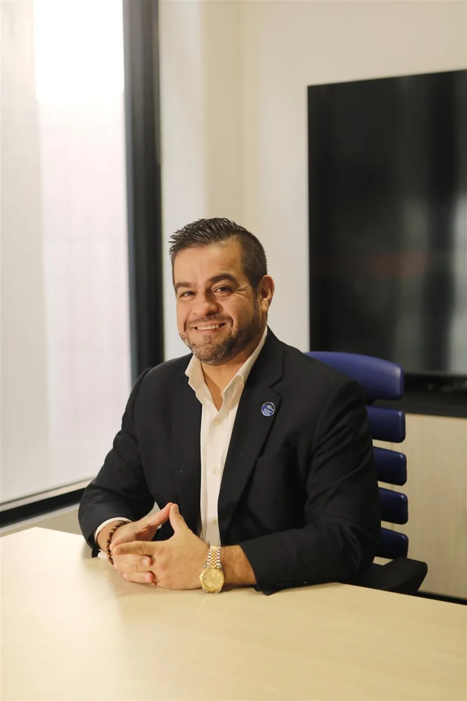

Identidade
Quem sou? O que valorizo? Quais crenças e escolhas definem meu ponto de partida?
A vida não muda por acaso.
Transforme quem você é, defina aonde quer chegar e construa o caminho. Um método que conecta identidade, estratégia e ação para transformar visão em resultados.
O INSTITUTO / NOSSA ESSÊNCIA
01 / 06
Uma travessia pode ser a reconstrução de uma carreira, a evolução de uma empresa, uma decisão de vida ou a busca por mais significado. O Instituto Líder de Travessias nasce para organizar essa transformação com clareza, método e indicadores.
“Toda grande travessia começa com uma decisão: não permanecer onde você está.”
O futuro não é apenas um lugar para chegar. É uma identidade para construir.
NOSSA METODOLOGIA
02 / 06
Uma jornada estruturada, da consciência do ponto de partida à construção de resultados, impacto e autoridade.
Quem sou? O que valorizo? Quais crenças e escolhas definem meu ponto de partida?
Para onde quero ir? Construção de visão, prioridades e objetivos estratégicos.
Como transformar intenção em movimento? Hábitos, iniciativas e plano de ação.
O que está mudando? Metas, indicadores e revisão consistente da execução.
Que impacto estou construindo? Consolidação de influência, contribuição e legado.
DUAS JORNADAS / UM MÉTODO
03 / 06
O mesmo princípio estratégico, aplicado à evolução do ser humano e ao desenvolvimento das organizações.
Mapa Estratégico do Ser. Diagnóstico das 12 dimensões da vida, Estado Anterior, Estado Atual e Estado Desejado, objetivos SMART e acompanhamento de 90 dias.
EXPLORAR SELF ↗Mapa Estratégico Empresarial. Seis perspectivas conectando cultura, pessoas, processos, clientes, finanças e impacto.
EXPLORAR BUSINESS ↗ESTRATÉGIA EM MOVIMENTO
04 / 06
Inspirado na lógica dos mapas estratégicos, o Método transforma propósito em objetivos, indicadores, metas e iniciativas conectados por relações de causa e efeito.
O ponto de partida é a identidade. A partir dela, capacidades, ações e indicadores se conectam para orientar decisões e medir evolução.
Modelo conceitual ilustrativo. Não representa resultados reais de mentorados.
EXPERIÊNCIAS DE TRANSFORMAÇÃO
05 / 06
Escolha a profundidade da jornada: da descoberta inicial à mentoria estratégica e à aplicação empresarial.
Diagnóstico, prioridades, metas e um plano de execução para sua travessia.
CONHECER A MENTORIA ↗IMERSÃO PRESENCIAL02Uma experiência intensiva de reflexão, diagnóstico e planejamento estratégico.
EXPLORAR A IMERSÃO ↗LIDERANÇA & NEGÓCIOS03Uma jornada para líderes e organizações que desejam alinhar visão e execução.
CONHECER BUSINESS ↗
O FUNDADORPOR TRÁS DO MÉTODO
06 / 06
Administrador, mentor e executivo com experiência internacional em educação, liderança e negócios. Sua trajetória de transformação pessoal e profissional inspira uma metodologia que combina desenvolvimento humano e planejamento estratégico.
O Instituto traduz essa experiência em ferramentas para que cada pessoa ou organização construa sua própria travessia — com identidade, direção e resultados.
Conheça a trajetória do fundador ↗SUA PRÓXIMA TRAVESSIA COMEÇA AQUI
O primeiro passo é decidir que sua história ainda tem novos capítulos para escrever.